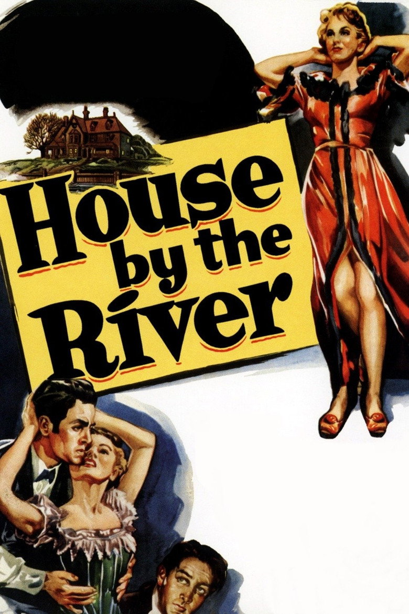

Fiche technique

Synopsis
À la fin de l'ère victorienne, Stephen Byrne, romancier sans succès, vit avec son épouse Marjorie dans une maison cossue au bord d'une rivière charriant les détritus de la ville. Un soir, alors que sa femme est absente, il s'en prend à leur domestique Emily au sortir du bain ; elle se débat, il la fait taire — et l'étouffe[1]. Paniqué, il appelle à l'aide son frère John, infirme et foncièrement honnête, et le contraint à l'aider à jeter le corps, cousu dans un sac, au fil de l'eau.
Mais la rivière rend ce qu'on lui confie. Quand le sac remonte à la surface, les soupçons se portent sur John — le sac lui appartenait. Loin de se dénoncer, Stephen laisse l'étau se resserrer sur son frère et découvre que le fait divers nourrit sa notoriété : il en tire la matière de son nouveau roman. C'est Marjorie qui, en lisant le manuscrit, comprendra ce que son mari y a réellement consigné[1].
Contexte de production
En 1950, Fritz Lang — exilé d'Allemagne depuis 1933, naturalisé américain en 1935 — traverse un creux de sa carrière hollywoodienne. House by the River est son unique film pour Republic Pictures, studio de séries B plus réputé pour ses westerns à petit budget que pour ses ambitions artistiques[1][2]. Le scénario de Mel Dinelli adapte un roman de l'écrivain britannique A. P. Herbert publié en 1920, déjà porté à la radio par l'émission Suspense en 1948[1].
Un épisode de production en dit long sur le Hollywood de l'époque : Lang voulait confier le rôle d'Emily à une actrice noire, ce que le bureau Hays lui refusa — la représentation d'une attirance entre personnes de couleurs de peau différentes était alors proscrite par la censure[1][3]. Le film, dont les droits restèrent longtemps flous, ne fut jamais distribué en France à sa sortie : le public français ne le découvrit qu'à la fin des années 1970, à la télévision, grâce au travail du cinéphile Patrick Brion[4]. Il fallut attendre la restauration de Lobster Films — scan 4K et restauration 2K d'après un élément nitrate conservé au British Film Institute, son restauré par Le Diapason — présentée au festival Lumière 2018, pour que le film connaisse enfin une vraie sortie en salles françaises, au printemps 2019[4][5].
Structure narrative
Le récit est linéaire, mais Lang l'organise comme une série de retours : tout ce que Stephen enfouit refait surface. Le film s'ouvre sur des charognes dérivant au fil de l'eau devant la maison — et sur cette réplique programmatique de Stephen : « la saleté vient des gens, pas du fleuve »[3]. La suite du film ne fera que vérifier la phrase contre celui qui la prononce : le sac lesté remonte, le procès rouvre ce que le crime avait clos, et le manuscrit ramène l'aveu au grand jour.
Car la vraie audace de construction est là : Stephen écrit, sous couvert de fiction, le roman de son propre meurtre. Cette mise en abyme fait du récit une confession déguisée en intrigue policière — le suspense ne porte pas sur l'identité du coupable, connue dès la première bobine, mais sur le moment où l'écriture le trahira. C'est Marjorie, lectrice attentive, qui referme la boucle : la vérité n'est pas arrachée par la police, elle se lit entre les lignes[1][3].
Mise en scène et procédés techniques
Tourné vite et avec peu, le film tire de ses décors de studio une puissance d'envoûtement que la critique française n'a cessé de souligner depuis sa redécouverte : une « atmosphère très forte, sombre et noire », qui glisse du film noir vers le fantastique[6]. La photographie très contrastée d'Edward J. Cronjager sculpte la maison en zones de lumière de gaz et de ténèbres, et la partition de George Antheil — lancinante, obsessionnelle — a été rapprochée par plusieurs critiques des climats hitchcockiens[6].
Le vocabulaire de Lang est ici d'une précision géométrique : plongées et contre-plongées redistribuent sans cesse le pouvoir entre les personnages — Emily descendant l'escalier sous le regard de Stephen qui attend en bas, avant que le cadre ne s'inverse quand il prend l'ascendant[3]. Les couloirs enferment (« on est prisonnier des couloirs chez Lang », écrit Revus & Corrigés[3]), les miroirs accusent : après avoir immergé le corps, Stephen surprend son propre reflet associé à l'image d'un poisson entrevu dans la rivière — rappel obsédant de ce qu'il est devenu[3]. Bertrand Tavernier résumait ce régime d'images d'une formule : ce qui distingue le film, c'est « l'onirisme de l'atmosphère », où « l'angoisse naît plus de la tendresse que de la cruauté »[4].
Personnages principaux
Stephen Byrne (Louis Hayward) est la trouvaille du film : ni monstre ni cerveau criminel, mais un homme ordinaire dont la médiocrité — littéraire, conjugale, morale — se mue en opportunisme dès que le crime lui offre enfin un sujet. Un « assassin bien ordinaire », selon le titre juste de Revus & Corrigés[3] : son charme de surface est la forme la plus aboutie de son imposture.
John Byrne (Lee Bowman), le frère infirme, est son exact contrepoids : honnête jusqu'à l'autodestruction, il paie pour un crime qu'il n'a fait que subir — le sac qui remonte porte son nom, et la lâcheté de Stephen fait le reste. Marjorie (Jane Wyatt), enfin, incarne la conscience lectrice du film : c'est elle qui découvre la vérité non par preuve matérielle, mais par lecture — reconnaissant dans le roman de son mari ce que la fiction prétendait maquiller[1]. Emily, la victime, n'apparaît que quelques minutes ; c'est pourtant autour du désir qu'elle suscite — le bain, le bruit de l'eau qui s'écoule — que Lang noue tout le mécanisme du passage à l'acte[6].
Thèmes
La culpabilité, d'abord — l'obsession cardinale de la période américaine de Lang. Le cinéaste en avait fait presque un programme :
« Je suis arrivé à la conclusion que l'esprit de chaque homme cache une impulsion latente pour le crime. » Fritz Lang, cité par le festival Lumière[4]
House by the River pousse cette intuition jusqu'au malaise : le spectateur est logé dans le point de vue du meurtrier, non pour l'absoudre mais pour éprouver combien le mal ordinaire s'accommode bien de la respectabilité victorienne. D'où le second thème, l'hypocrisie sociale : la maison cossue, la domesticité, la bienséance des voisins — tout ce vernis que la rivière, découverte après découverte, écaille.
Le thème le plus singulier reste celui de l'écriture. Stephen transforme son crime en matière romanesque, sa notoriété croît avec l'enquête, et le film devient une fable acide sur l'exploitation littéraire du réel : l'art comme blanchiment du sang. Mais l'écriture est réversible — ce qui sert d'alibi devient aveu dès qu'une lectrice attentive s'en empare[3]. Enfin, la rivière elle-même : conscience liquide du récit, elle rend systématiquement ce qu'on lui confie, jusqu'à faire de la nature le seul juge que la société victorienne du film ne parvient pas à corrompre[3][6].
Réception critique et postérité
À sa sortie américaine, l'accueil est tiède, voire dédaigneux. Bosley Crowther, dans le New York Times, expédie le film :
« Plein d'ornements victoriens, d'éclairages ténébreux et d'humeurs morbides, c'est une tentative désespérée de donner la chair de poule avec une intrigue psychologico-horrifique des plus banales. » Bosley Crowther, New York Times, 1950, cité par Wikipédia[1]
Longtemps invisible en Europe — jamais distribué en France, absent de bien des filmographies — le film fut d'abord une affaire de cinéphiles avant de connaître une réévaluation spectaculaire : la critique moderne y voit l'un des Lang américains les plus singuliers, un pont entre le noir des années 1940 et le mélodrame gothique[2][3]. La restauration de 2018 et la ressortie française de 2019 — soit près de soixante-dix ans après sa production — ont achevé de faire passer ce « petit » film de studio pauvre au rang de joyau redécouvert du film noir[4][5][7].
Conclusion
Au fil de l'eau est le paradoxe langien par excellence : un film tourné dans la gêne — studio pauvre, vedettes de second rang, censure tatillonne — qui transforme chacune de ses contraintes en principe de style. Faute de moyens, Lang resserre ; faute de stars, il durcit ses personnages ; faute de pouvoir montrer, il suggère — et c'est précisément ce régime de la suggestion, cette maison-aquarium où la lumière de gaz tremble comme un reflet sur l'eau, qui fait aujourd'hui la modernité du film.
Surtout, le film condense en 88 minutes ce que le cinéma de Lang a de plus profond : l'idée que le crime n'est pas une exception monstrueuse mais une virtualité ordinaire, et que la justice, quand les institutions défaillent, revient à des instances plus patientes — une rivière, un manuscrit, une lectrice. On comprend que la postérité ait inversé le jugement de 1950 : ce que Crowther prenait pour des « ornements victoriens » était en réalité une méditation gothique sur la vase des consciences, dont la redécouverte tardive aura été, très littéralement, une remontée à la surface.
Sources
- Wikipédia (en) — « House by the River » : production, distribution, censure Hays, adaptation radio, citation de Bosley Crowther. en.wikipedia.org/wiki/House_by_the_River
- Slant Magazine — critique de House by the River (contexte Republic Pictures, réévaluation critique), référencée via recherche web. slantmagazine.com/film/house-by-the-river
- Revus & Corrigés — « Un assassin bien ordinaire dans House by the River de Fritz Lang (1950) », 25 janvier 2019 : analyse des scènes clés, motifs (escalier, couloirs, miroirs, rivière), place dans l'œuvre. revusetcorriges.com
- Festival Lumière 2018 — page du film : citations de Fritz Lang et Bertrand Tavernier, détail de la restauration (Lobster Films, scan 4K/restauration 2K, élément nitrate du BFI, son Le Diapason), redécouverte française via Patrick Brion. 2018.festival-lumiere.org
- Lobster Films — édition restaurée de House by the River (référencée via recherche web). shop.lobsterfilms.com
- L'Œil sur l'écran — « Au fil de l'eau (1950) de Fritz Lang » : critique française (atmosphère, photographie, partition d'Antheil, mécanique du désir et de la culpabilité). films.oeil-ecran.com
- The Movie Database (TMDB) — fiche du film (données factuelles, affiche). themoviedb.org/movie/30014